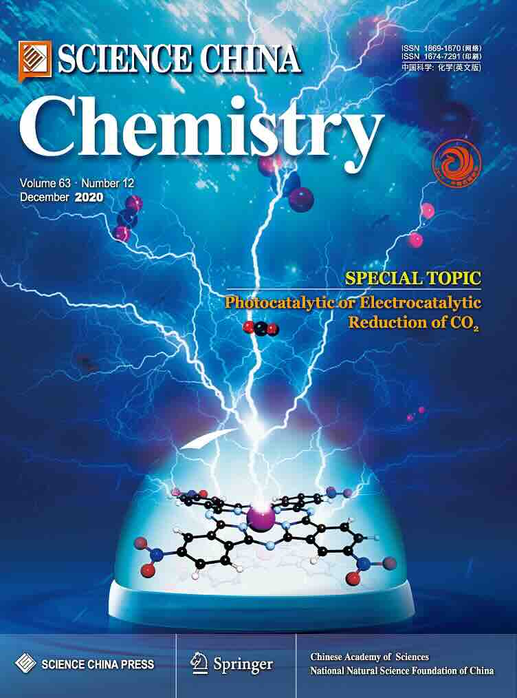
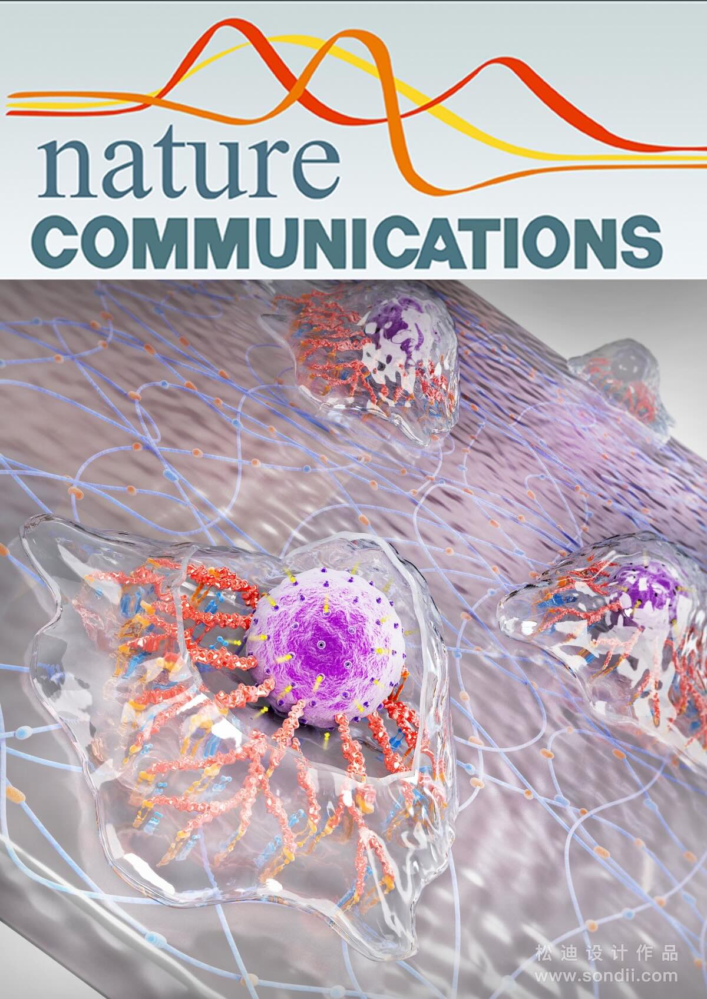
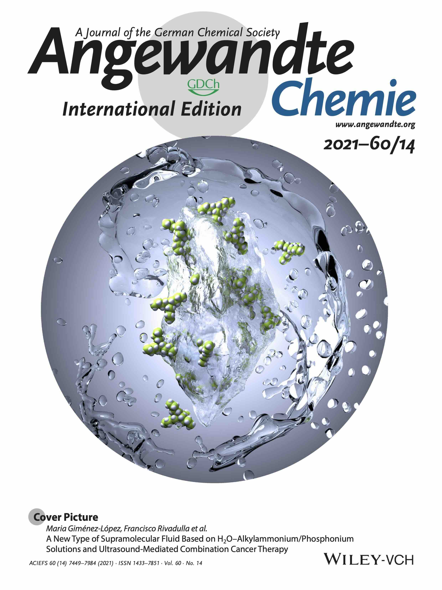

Regiodivergent Hydrophosphination of Bicyclo[1.1.0]-Butanes
under Catalyst Control
Huang, Z.; Tan, H.;§# Cui, R.; Hu,
Y.; Zhang, S.; Jia J.; Zhang, X.;*#
Zhang, Q.-W.*
Nat. Commun., 2025, In Press.
[DFT structures (on Zenodo)] [DFT structures (.zip folder)] [Supporting Information (DFT)]
|

|
Carbene-Catalyzed Intramolecular Cyclization to Access
Inherently Chiral Saddle-Shaped Lactones: Achiral Bases
Alternate Product Chirality
Wei, L.;† Chen, Y.;† Zhou, Q.;† Wei,
Z.;† Tu, T.; Ren, S.-C.; Chi, Y. R.;*
Zhang, X.;*#
Yang, X.*
J. Am. Chem. Soc., 2025, In Press.
[DFT structures (on Zenodo)] [DFT structures (.zip folder)] [Supporting Information (DFT)]
|
|
Divergent Construction of Cyclobutane-Fused Pentacyclic
Scaffolds via Double Dearomative Photocycloaddition
Song, T.-T.; Lin, F.; Xu, S.-T.; Zhou, B.-C.; Zhang, L.-M.; Guo,
S.-Y.; Zhang, X.;*# Chen, Q.-A.*
Angew. Chem. Int. Ed., 2025, Accepted.
[DFT structures (on Zenodo)] [DFT structures (.zip folder)]
|
|
Photochemical Dual Radical Coupling of Carboxylates with
Alkenes/Heteroarenes via Diradical Equivalents
Wang, G.; Ding, J.; Wu, J.; Jin, J.; Zhang, X.; Huang,
S.; Ren, S-C; Chi, Y. R.* J. Am. Chem. Soc., 2025,
147, 13, 11368–11377
|
|
Asymmetric Synthesis of S(IV)-Stereogenic Sulfinimidate Esters
by Sulfinamide Activation
Xiong, Q.; Liao, M.; Zhao, S.; Wu, S.; Hong, Y.; Chi, Y. R.;
Zhang, X.;*# Wu, X.*
Angew. Chem. Int. Ed., 2025, e202500170.
[DFT structures (on Zenodo)] [DFT structures (.zip folder)][Supporting Information (DFT)]
-
Selected as Organocatalysis Hot Paper
|
|
Unravelling the Mechanism and Influence of Auxiliary Ligands
on the Isomerization of Neutral [P,O]-Chelated Nickel
Complexes for Olefin Polymerization
Tan, J.;§† Liu,
J.;∇†
Zhang, X.* J. Org. Chem., 2025, 90, 5,
2052–2061
[DFT structures (on Zenodo)] [DFT structures (.zip folder)] [Article][Supporting Information (DFT)]
|
|
NHC-Mediated Photocatalytic Para-Selective C-H
Acylation of Aryl Alcohols: Regioselectivity Control via
Remote Radical Spiro Cyclization
Zhang, T.; Wang, L.; Peng, X.; Liao, T.; Chen, D.; Tu, T.; Liu,
D.; Cheng, Z.; Huang, S.; Ren, S-C;*
Zhang, X.;*# Chi, Y. R.*
Sci. China Chem., 2025, Accepted.
[DFT structures (on Zenodo)] [DFT structures (.zip folder)] [Supporting Information (DFT)]
|

|
Carbene-catalyzed chirality-controlled site-selective
acylation of saccharides
Liu, Y.-G.;* Zhong, Z.; Tang, Y.; Wang, H.; Vummaleti, S. V.
C.;# Peng, X.; Peng, P.; Zhang, X.;*#
Chi, Y. R.* Nat. Commun., 2025, 16, 54.
[DFT structures (on Zenodo)] [DFT structures (.zip folder)][Article][Supporting Information (DFT)]
|

|
Influence of Keto-Enol Tautomerism in Regulating CO2
Photoreduction Activity in Porous Organic Porphyrinic
Photopolymer
Boruah A.;† Boro B.;† Wang J.; Paul R.; Ghosh,
R.;Mohapatra, D.; Li P.-Z.;*
Zhang, X.;*# Mondal J.*
ACS Appl. Mater. Interfaces, 2025, 17, 1,
1259–1272.
[DFT structures (on Zenodo)] [DFT structures (.zip folder)] [Supporting Information (DFT)]
|
|
Kinetically-controlled Z-alkene Synthesis using Iron-catalysed
Allene Dialkylation
Tan, T-D.; Tee, K. Z.; Luo, X.; Qian, P-C.;
Zhang, X.;*#
Koh, M. J.*
Nat. Synth., 2025, 4, 116–123.
[DFT structures (on Zenodo)] [DFT structures (.zip folder)] [Supporting Information (DFT)]
|
|
Synthesis of β-(Hetero)aryl Ketones via Ligand-Enabled
Nondirected C-H Alkylation
Bairagi, Y.;† Porey, S.;† Vummaleti, S. V. C.;#
Zhang, X.;*# Lahiri, G. K.;* Maiti, D.*
ACS Catal., 2024, 14, 20, 15654–15664.
[DFT structures (on Zenodo)] [DFT structures (.zip folder)][ChemRxiv version] [Supporting Information (DFT)]
|
|
Catalyst Control over S(IV)-stereogenicity via Carbene-derived
Sulfinyl Azolium Intermediates
Li, B.;† Hu, J.;† Liao, M.; Xiong, Q.; Zhang, Y.;
Chi, Y. R.; Zhang, X.;*# Wu, X.*
J. Am. Chem. Soc., 2024, 146, 36, 25350–25360.
[DFT structures (on Zenodo)] [DFT structures (.zip folder)] [Supporting Information (DFT)]
|
|
Photocatalytic Direct para-selective C-H Amination of Benzyl
Alcohols: Selectivity Independent of Side Substituents
Liu, D.; Tu, T.; Zhang, T.; Nie, G.; Liao, T.; Ren, S-C;*
Zhang, X.;*# Chi, Y. R.*
Angew. Chem. Int. Ed., 2024, 63, e202407293.
[DFT structures (on Zenodo)] [DFT structures (.zip folder)] [Supporting Information (DFT)]
-
Selected as #AngewandteVIP - Very Important Paper
|

|
Advancing Recyclable Thermosets through C=C/C=N Dynamic
Covalent Metathesis Chemistry
Zheng, J.;† Feng, H.;† Zhang, X.;
# Zheng, J.;# Ng, J. K. W.; Wang, S.;*
Hadjichristidis, N.;* Li, Z.* J. Am. Chem. Soc.,
2024, 146, 31, 21612–21622.
[DFT structures (on Zenodo)] [DFT structures (.zip folder)] [Supporting Information (DFT)]
|
|
Ionic Hydrogen Bond-Assisted Catalytic Construction of
Nitrogen Stereogenic Center via Formal Desymmetrization of
Remote Diols
Luo, Z.; Liao, M.; Li, W.; Zhao, S.; Tang, K.; Zheng, P.; Chi,
Y. R.;
Zhang, X.;*# Wu, X.*
Angew. Chem. Int. Ed., 2024, 63, e202404979.
[DFT structures (on Zenodo)] [DFT structures (.zip folder)] [Supporting Information (DFT)]
-
Editor's Choice of "Asymmetric Catalysis Hot Paper"
-
Highlighted by
化学深耕堂
(in Chinese)
|
|
Congested C(sp3)-rich Architectures by
Iron-catalyzed Conjunctive Alkylation
Tan. T.-D.; Serviano, J.; Luo, X.; Qian, P.-C.; Holland P.;*
Zhang, X.;*# Koh, M. J.* Nat. Catal.,
2024, 7, 321–329.
[DFT structures (on Zenodo)] [DFT structures (.zip folder)] [IRC movies (.zip folder)] [Supporting Information (DFT)]
|

|
Non-crystalline Zeolitic Imidazolate Frameworks Tethered with
Ionic Liquids as Catalysts for CO2 Conversion into
Cyclic Carbonates
Wang, J.;* Li, X.; Yi, G.; Teong S. P.; Chan S. P.;
Zhang, X.;*# Zhang, Y.*
ACS Appl. Mater. Interfaces, 2024, 16, 8,
10277–10284.
[DFT structures (on Zenodo)] [DFT structures (.zip folder)] [Supporting Information (DFT)]
-
Highlighted by:
离子液体
(in Chinese)
|
|
Nondirected C–H/C–F Coupling for the Synthesis of
α-Fluoro Olefinated Arenes
Porey, S.; Bairagi, Y.; Guin, S.; Zhang, X.;*#
Maiti, D.* ACS Catal., 2023, 13, 21, 14000–14011.
[DFT structures (on Zenodo)] [DFT structures (.zip folder)] [Supporting Information (DFT)]
|
|
Directing Group Assisted para-Selective C-H Alkynylation of
Unbiased Arenes Enabled by Rhodium Catalysis
Dutta, U.;† Prakash, G.;† Devi, K.; Borah, K;
Zhang, X.;*# Maiti, D.* Chem. Sci.,
2023, 14, 11381–11388. [DFT structures (on Zenodo)] [DFT structures (.zip folder)] [Article] [Supporting Information (DFT)]
|

|
Access to Unsaturated Bicyclic Lactones by Overriding
Conventional C(sp3)−H Site Selectivity
Das, J.; Ali, W.; Ghosh, A.; Pal, T.; Mandal1, A.; Chitrala, T.;
Dutta, S.; Pothikumar, R.; Ge, H.;* Zhang, X.;*#
Maiti, D.* Nat. Chem., 2023, 15, 1626–1635.
[DFT structures (on Zenodo)] [DFT structures (.zip folder)] [ChemRxiv version] [Article] [Supporting Information (DFT)]
|

|
Accelerating Explicit Solvent Models of Heterogeneous
Catalysts with Machine Learning Interatomic Potentials
Chen, B. W. J.;* Zhang, X.;* Zhang, J. Chem. Sci.,
2023, 14, 8338–8354.
[Article] [Supporting Information]
|
|
Chiral Phosphoric Acid Catalyzed Asymmetric Hydrolysis of
Biaryl Oxazepines for the Synthesis of Axially Chiral Biaryl
Amino Phenol Derivatives
Wei, L.; Li, J.; Zhao, Y.; Zhou, Q.; Wei, Z.; Chen, Y.;
Zhang, X.;*# Yang, X.*
Angew. Chem. Int. Ed. 2023, 62, e202306864;
Angew. Chem. 2023, 135, e202306864.
[DFT structures (on Zenodo)] [DFT structures (.zip folder)] [Supporting Information (DFT)]
|

|
Atroposelective Access to 1,3-Oxazepine-Containing Bridged
Biaryls via Carbene-Catalyzed Desymmetrization of Imines
Yang, X.;* Wei, L.; Wu, Y.; Zhou, L.; Zhang, X.;*#
Chi, Y. R.* Angew. Chem. Int. Ed. 2023, 62,
e202211977; Angew. Chem. 2023, 135, e202211977.
[DFT structures (on Zenodo)] [DFT structures (.zip folder)] [Supporting Information (DFT)]
|

|
Dual Ligand Enabled Non-Directed C−H Chalcogenation of Arenes
and Heteroarenes
Sinha, S. K.,† Panja, S.;† Grover, J.;†
Hazra, P. S.; Pandit, S.; Bairagi, Y.; Zhang, X.;*#
Maiti, D.* J. Am. Chem. Soc. 2022, 144, 27,
12032–12042.
[DFT structures (on Zenodo)] [DFT structures (.zip folder)] [Supporting Information (DFT)]
|
|
Programmable Selective Acylation of Saccharides Mediated by
Carbene and Boronic Acid
Lv, W-X.; Chen, H.; Zhang, X.;# Ho, C. C.;
Liu, Y.; Wu, S.; Wang, H.; Jin, Z.; Chi, Y. R.* Chem,
2022, 8, 1518–1534.
[DFT structures (on Zenodo)] [DFT structures (.zip folder)] [Article] [Supporting Information (DFT)]
-
Highlighted by
X-MOL
(in Chinese)
|

|
Carbene-Catalyzed Enantioselective Sulfonylation of Enone
Aryl Aldehydes: A New Mode of Breslow Intermediate
Oxidation
Deng, R.;† Wu, S.;† Mou, C.;† Liu, J.;
Zheng, P.;* Zhang, X.;*# Chi, Y. R.*
J. Am. Chem. Soc., 2022, 144, 12, 5441–5449.
[DFT structures (on Zenodo)] [DFT structures (.zip folder)] [Supporting Information (DFT)]
|
|
Catalytic atroposelective synthesis of axially chiral
benzonitriles via chirality control during bond dissociation
and CN group formation
Lv, Y.;† Luo, G.;† Liu, Q.; Jin, Z.;*
Zhang, X.;*# Chi, Y. R.* Nat. Commun.,
2022, 13, 36.
[DFT structures (on Zenodo)] [DFT structures (.zip folder)] [Article] [Supporting Information (DFT)]
|
|
Synthesis of C-glycosides by Ti-catalyzed stereoselective
glycosyl radical functionalization
Jiang, Y.; Wang, Q.*; Zhang, X.;*# Koh, M. J.*
Chem, 2021, 7, 12, 3377–3392.
[DFT structures (on Zenodo)] [DFT structures (.zip folder)] [Article] [Supporting Information (DFT)]
|

|
Enantioselective Modification of Sulfonamides and
Sulfonamide-Containing Drugs via N-Heterocyclic Carbene
Organic catalysis
Song, R;† Liu, Y;† Majhi, P. K.; Ng, P. L.; Hao,
L.; Xu, J.; Tian, W.;* Zhang, L.; Liu, H.;
Zhang, X.;*# Chi, Y. R.*
Org. Chem. Front., 2021, 8, 2413–2419.
[DFT structures (on Zenodo)] [DFT structures (.zip folder)] [Supporting Information (DFT)]
-
2021 Organic Chemistry Frontiers HOT Articles
Collection
|
|
Carbene-Catalyzed Activation of Remote Nitrogen Atoms of
(benz)imidazole-derived aldimines for Enantioselective
Synthesis of Heterocycles
Yang, X.;† Xie Y.;† Xu, J.; Ren, S.; Mondal, B.;
Zhou, L.; Tian, W.;* Zhang, X.;*# Hao, L.;
Jin, Z.; Chi, Y. R.* Angew. Chem. Int. Ed., 2021,
60, 7906–7912.
[DFT structures (on Zenodo)] [DFT structures (.zip folder)] [Supporting Information (DFT)]
|
|